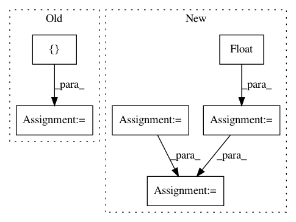

6ddf825a4aa1bcf3a35bba8d36bc433fe5ebaa39,torchsample/utils.py,,th_nearest_interp_3d,#Any#Any#,285
Before Change
zc = torch.clamp(coords[:,:,2], 0, input.size(3)-1)
// round to nearest coordinate
coords = torch.stack([xc.round().long(),
yc.round().long(),
zc.round().long()], 2)
// gather image values at coordinates
mapped_vals = torch.stack([th_gather_nd(input[i], coords[i])
for i in range(input.size(0))], 0)
return mapped_vals.view_as(input)
After Change
coords[:,1] = torch.clamp(coords[:,1], 0, input.size(2)-1).round()
coords[:,2] = torch.clamp(coords[:,2], 0, input.size(3)-1).round()
stride = torch.LongTensor(input.stride())[1:].float()
idx = coords.mv(stride)
input_flat = th_flatten(input)
mapped_vals = input_flat[idx.long()]
return mapped_vals.view_as(input)
In pattern: SUPERPATTERN
Frequency: 4
Non-data size: 6
Instances
Project Name: ncullen93/torchsample
Commit Name: 6ddf825a4aa1bcf3a35bba8d36bc433fe5ebaa39
Time: 2017-04-24
Author: ncullen@Nicks-MacBook-Pro.local
File Name: torchsample/utils.py
Class Name:
Method Name: th_nearest_interp_3d
Project Name: CellProfiler/CellProfiler
Commit Name: 6c12d3f40ae84d60ab1c74594a2291d684c0295e
Time: 2009-10-05
Author: thouis@1fc53939-2000-0410-845c-e8453a809027
File Name: pyCellProfiler/cellprofiler/modules/imagemath_simple.py
Class Name:
Method Name: add_image
Project Name: allenai/allennlp
Commit Name: 8ba58675175e91d306f55380833458acfcb38cdd
Time: 2018-05-10
Author: pradeep.dasigi@gmail.com
File Name: allennlp/models/semantic_parsing/wikitables/wikitables_erm_semantic_parser.py
Class Name: WikiTablesErmSemanticParser
Method Name: _get_state_cost
Project Name: google-research/google-research
Commit Name: 2a11d3f0bad2430b81628fa6cb0a6301d099d77d
Time: 2020-12-11
Author: xingyousong@google.com
File Name: performer/fast_attention/tensorflow/fast_attention_test.py
Class Name: TransformerLayersTest
Method Name: test_softmax_noncausal_attention_block_output